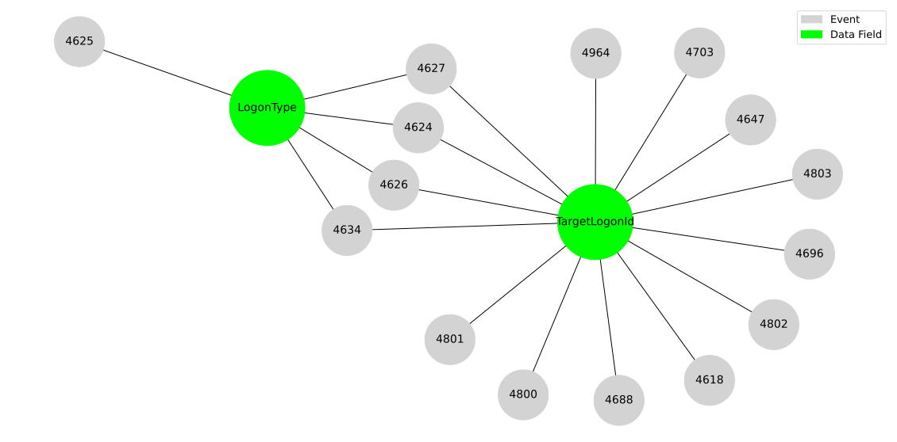
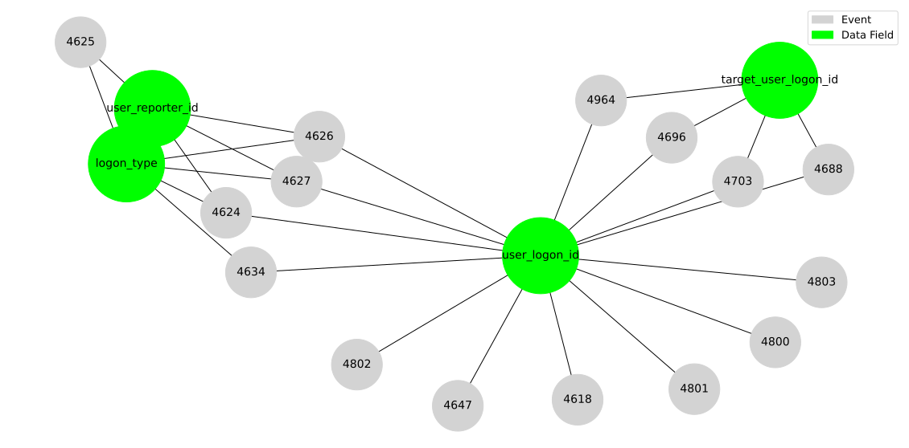

Correlating Windows Security Auditing
Contents
Correlating Windows Security Auditing¶
Author: Jose Luis Rodriguez - @Cyb3rPandaH
Organization: Open Threat Research (OTR)
References:
1) Importing Python Libraries¶
from openhunt import ossem
import pandas as pd
pd.set_option('display.max_colwidth', None)
2) Getting All Dictionaries’ Names for Security Auditing¶
# Getting a Python list with dictionaries' names
security_auditing_events = ossem.getDictionaryName('Windows','Security')
# Printing number of dictionaries collected
print(len(security_auditing_events), " dictionaries' names collected!!")
# Example of 5 names
security_auditing_events[:5]
392 dictionaries' names collected!!
['event-4610.yml',
'event-4611.yml',
'event-4612.yml',
'event-4614.yml',
'event-4615.yml']
3) Getting OSSEM Dictionaries Content for Security Auditing¶
# Getting OSSEM dictionaries content (summary view)
security_auditing_dictionaries = ossem.getDictionaryContent('Windows','Security',security_auditing_events,view = 'summary')
# Example of dictionary content
security_auditing_dictionaries.head(10)
| title | event_id | standard_name | name | field_description | sample_value | |
|---|---|---|---|---|---|---|
| 0 | Event ID 4610: An authentication package has been loaded by the Local Security Authority. | 4610 | logon_authentication_package_name | AuthenticationPackageName | the name of loaded Authentication Package. The format is: DLL_PATH_AND_NAME: AUTHENTICATION_PACKAGE_NAME. | C:\Windows\system32\msv1_0.DLL : MICROSOFT_AUTHENTICATION_PACKAGE_V1_0 |
| 1 | Event ID 4611: A trusted logon process has been registered with the Local Security Authority. | 4611 | user_sid | SubjectUserSid | SID of account that registered the trusted logon process. | S-1-5-18 |
| 2 | Event ID 4611: A trusted logon process has been registered with the Local Security Authority. | 4611 | user_name | SubjectUserName | the name of the account that registered the trusted logon process. | DC01$ |
| 3 | Event ID 4611: A trusted logon process has been registered with the Local Security Authority. | 4611 | user_domain | SubjectDomainName | subject's domain or computer name. | CONTOSO |
| 4 | Event ID 4611: A trusted logon process has been registered with the Local Security Authority. | 4611 | user_logon_id | SubjectLogonId | hexadecimal value that can help you correlate this event with recent events that might contain the same Logon ID, for example, "4624: An account was successfully logged on." | 0x3e7 |
| 5 | Event ID 4611: A trusted logon process has been registered with the Local Security Authority. | 4611 | logon_process_name | LogonProcessName | the name of registered logon process. | Winlogon |
| 6 | Event 4612 - task_0 | 4612 | TBD | AuditsDiscarded | None | None |
| 7 | Event ID 4614: A notification package has been loaded by the Security Account Manager. | 4614 | logon_notification_package_name | NotificationPackageName | the name of loaded Notification Package. | WDIGEST |
| 8 | Event 4615 - task_0 | 4615 | TBD | SubjectUserSid | None | None |
| 9 | Event 4615 - task_0 | 4615 | TBD | SubjectUserName | None | None |
4) Filtering Data Fields for Event 4624: An account was successfully logged on¶
security_auditing_dictionaries[security_auditing_dictionaries['event_id'] == '4624'][['name']]
| name | |
|---|---|
| 34 | SubjectUserSid |
| 35 | SubjectUserName |
| 36 | SubjectDomainName |
| 37 | SubjectLogonId |
| 38 | TargetUserSid |
| 39 | TargetUserName |
| 40 | TargetDomainName |
| 41 | TargetLogonId |
| 42 | LogonType |
| 43 | LogonProcessName |
| 44 | AuthenticationPackageName |
| 45 | WorkstationName |
| 46 | LogonGuid |
| 47 | TransmittedServices |
| 48 | LmPackageName |
| 49 | KeyLength |
| 50 | ProcessId |
| 51 | ProcessName |
| 52 | IpAddress |
| 53 | IpPort |
| 54 | ImpersonationLevel |
| 55 | RestrictedAdminMode |
| 56 | TargetOutboundUserName |
| 57 | TargetOutboundDomainName |
| 58 | VirtualAccount |
| 59 | TargetLinkedLogonId |
| 60 | ElevatedToken |
5) Identifying other Security Auditing events that contain ‘LogonType’ data field¶
security_auditing_dictionaries[security_auditing_dictionaries['name'] == 'LogonType']
| title | event_id | standard_name | name | field_description | sample_value | |
|---|---|---|---|---|---|---|
| 42 | Event ID 4624: An account was successfully logged on | 4624 | logon_type | LogonType | the type of logon which was performed | 2 |
| 71 | Event ID 4625: An account failed to log on | 4625 | logon_type | LogonType | the type of logon which was performed | 2 |
| 90 | Event ID 4626: User/Device claims information | 4626 | logon_type | LogonType | the type of logon which was performed. | 3 |
| 103 | Event ID 4627: Group membership information | 4627 | logon_type | LogonType | the type of logon which was performed. | 3 |
| 111 | Event ID 4634: An account was logged off | 4634 | logon_type | LogonType | the type of logon which was performed. | 2 |
6) Identifying other Security Auditing events that contain ‘LogonType’ and ‘TargetLogonId’ data fields¶
data_fields = security_auditing_dictionaries[(security_auditing_dictionaries['name'] == 'LogonType') | \
(security_auditing_dictionaries['name'] == 'TargetLogonId')]
data_fields
| title | event_id | standard_name | name | field_description | sample_value | |
|---|---|---|---|---|---|---|
| 29 | Event ID 4618: A monitored security event pattern has occurred. | 4618 | user_logon_id | TargetLogonId | 0x1 | |
| 41 | Event ID 4624: An account was successfully logged on | 4624 | user_logon_id | TargetLogonId | hexadecimal value that can help you correlate this event with recent events that might contain the same Logon ID | 0x8dcdc |
| 42 | Event ID 4624: An account was successfully logged on | 4624 | logon_type | LogonType | the type of logon which was performed | 2 |
| 71 | Event ID 4625: An account failed to log on | 4625 | logon_type | LogonType | the type of logon which was performed | 2 |
| 89 | Event ID 4626: User/Device claims information | 4626 | user_logon_id | TargetLogonId | hexadecimal value that can help you correlate this event with recent events that might contain the same Logon ID | 0x136f7b |
| 90 | Event ID 4626: User/Device claims information | 4626 | logon_type | LogonType | the type of logon which was performed. | 3 |
| 102 | Event ID 4627: Group membership information | 4627 | user_logon_id | TargetLogonId | hexadecimal value that can help you correlate this event with recent events that might contain the same Logon ID | 0x136f7b |
| 103 | Event ID 4627: Group membership information | 4627 | logon_type | LogonType | the type of logon which was performed. | 3 |
| 110 | Event ID 4634: An account was logged off | 4634 | user_logon_id | TargetLogonId | hexadecimal value that can help you correlate this event with recent events that might contain the same Logon ID | 0x1a0992 |
| 111 | Event ID 4634: An account was logged off | 4634 | logon_type | LogonType | the type of logon which was performed. | 2 |
| 116 | Event ID 4647: User initiated logoff | 4647 | user_logon_id | TargetLogonId | hexadecimal value that can help you correlate this event with recent events that might contain the same Logon ID | 0x29b379 |
| 450 | Event ID 4688: A new process has been created | 4688 | target_user_logon_id | TargetLogonId | hexadecimal value that can help you correlate this event with recent events that might contain the same Logon ID, for example, "4624: An account was successfully logged on." | 0x4a5af0 |
| 519 | Event ID 4696: A primary token was assigned to process | 4696 | target_user_logon_id | TargetLogonId | hexadecimal value that can help you correlate this event with recent events that might contain the same Logon ID, for example, "4624: An account was successfully logged on." | 0x1c8c5 |
| 570 | Event ID 4703: A user right was adjusted. | 4703 | target_user_logon_id | TargetLogonId | hexadecimal value that can help you correlate this event with recent events that might contain the same Logon ID, for example, "4624: An account was successfully logged on." | 0x3e7 |
| 1412 | Event ID 4800: The workstation was locked | 4800 | user_logon_id | TargetLogonId | hexadecimal value that can help you correlate this event with recent events that might contain the same Logon ID, | 0x759a9 |
| 1417 | Event ID 4801: The workstation was unlocked | 4801 | user_logon_id | TargetLogonId | hexadecimal value that can help you correlate this event with recent events that might contain the same Logon ID, | 0x759a9 |
| 1422 | Event ID 4802: The screen saver was invoked | 4802 | user_logon_id | TargetLogonId | hexadecimal value that can help you correlate this event with recent events that might contain the same Logon ID, | 0x759a9 |
| 1427 | Event ID 4803: The screen saver was dismissed | 4803 | user_logon_id | TargetLogonId | hexadecimal value that can help you correlate this event with recent events that might contain the same Logon ID | 0x759a9 |
| 1947 | Event ID 4964: Special groups have been assigned to a new logon | 4964 | target_user_logon_id | TargetLogonId | hexadecimal value that can help you correlate this event with recent events that might contain the same Logon ID, for example, "4624: An account was successfully logged on." | 0x139faf |
7) Visualizing Security Auditing events that contain ‘LogonType’ and ‘TargetLogonId’ data fields: Network Graph¶
ossem.event_to_field_network(data_fields,type = 'original')

8) Visualizing Security Auditing events that contain Standard Names for ‘LogonType’ and ‘TargetLogonId’ data fields: Network Graph¶
# Getting a list of event_id used in our previous network graph
event_for_graph = data_fields['event_id'].tolist()
# Adding 'SubjectLogonId' data field to the filer
data_fields_2 = security_auditing_dictionaries[((security_auditing_dictionaries['name'] == 'LogonType') | \
(security_auditing_dictionaries['name'] == 'TargetLogonId') | \
(security_auditing_dictionaries['name'] == 'SubjectLogonId')) \
& (security_auditing_dictionaries['event_id'].isin(event_for_graph))]
# Creating network graph using standard names
ossem.event_to_field_network(data_fields_2,type = 'standard')
